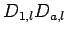
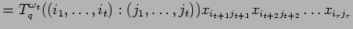
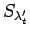

In order to prove the proposition we have to consider generalizations of the elements , which are defined for any by
For a positive integer  , define the -integer
.
, define the -integer
.
PROOF: Using the above introduced notations we may write the right hand side
of (22) as
. Since
, we deduce
modulo  if and
modulo
if and
modulo  in the case
in the case  .
.
We proceed by induction on  . If , both sides are zero if .
In the case
. If , both sides are zero if .
In the case  we have to show that
which was proved above.
we have to show that
which was proved above.
For the induction step we write and obtain
|  | ||
Since
the lemma follows.

We introduce some new conventions. To an ordered subset we define corresponding multi-indices by
From the definition of , we have . By the relations of the exterior algebra there is another integer such that . By (11.6) and Corollary 11.9 we calculate
We will prove the equation
 with the help of the Laplace-Expansion which
is a special case of Laplace-Duality (Proposition
9.7) applied to the partitions
with the help of the Laplace-Expansion which
is a special case of Laplace-Duality (Proposition
9.7) applied to the partitions
Caution: The symbol should not be confused with the -th component
of a partition  .
A bideterminant
is the product of
a
minor determinant with a monomial, that is
.
A bideterminant
is the product of
a
minor determinant with a monomial, that is
|  | ||
 |
in particular
.
Let denote the set of distinguished left coset representatives
of
in
. Using basic transpositions
 this set can be written down explicitly:
this set can be written down explicitly:
Setting
the quantum symplectic (left) Laplace-Expansion deduced from Proposition 9.7 reads
In the classical case and this turns out to be the familar Laplace-Expansion. There is a very useful recursive calculation rule for the endomorphisms :
Before we state the fundamental lemma of this section we remind the reader of the addition of multi-indices, for example .
PROOF: First we treat the case where  .
Here we have
by definition. Since
the summation on the
right hand side of the lemma is over
too. Furthermore,
.
Here we have
by definition. Since
the summation on the
right hand side of the lemma is over
too. Furthermore,
For the general case we use induction on  . In the case we
necessarily have
. In the case we
necessarily have  , which has been treated above.
In order to prove the induction
step we may assume and . We
divide the summation on the right hand side
into three subsums:
, which has been treated above.
In order to prove the induction
step we may assume and . We
divide the summation on the right hand side
into three subsums:
(A)  (B)
(C)
(B)
(C)
and write , and respectively. First we treat subsum . Using (4.2) we see
If
contains  , we may write
with some
such that for the corresponding
multi-index
, we may write
with some
such that for the corresponding
multi-index
 we have
we have
The bideterminant vanishes by Corollary 9.2. Unfortunately the bideterminant with is not zero in general. Since
Since and by (17) we may again deduce from Corollary 11.9 that
Here, in addition, we have used the equations
and
which are valid inside the exterior algebra.
Modulo the ideal
of
spanned by  the congruence relation
holds. Therefore, modulo this ideal
the congruence
the congruence relation
holds. Therefore, modulo this ideal
the congruence
by Lemma 9.3. Here we have also used the fact that by Lemma 9.4 since . Now substitute (27) into the first equation of (26) and the equations (26) and (25) into (24). Note that the terms comming from (25) and the last term of (27) cancel each other. We obtain the following expression for the subsum (A).
Now we apply Laplace-Expansion (Proposition 14.3) twice to the first and second bideterminant and once to the third:
To the first term of that sum we can apply the induction hypothesis. To this claim
note that the symbol  on the left of the bideterminant stands for a sum
over the bideterminant's left multi-index. In order to apply the induction hypothesis
this summation has to be commuted with the summation under the
on the left of the bideterminant stands for a sum
over the bideterminant's left multi-index. In order to apply the induction hypothesis
this summation has to be commuted with the summation under the  -symbol.
In a similar way we can apply Lemma 14.1
together with Corollary 11.9 to the second term of the
sum above. This results in
-symbol.
In a similar way we can apply Lemma 14.1
together with Corollary 11.9 to the second term of the
sum above. This results in
 |
||
Since and commute, we see from equation (23)
Thus subsum (A) and (B) together equal
Now we are able to prove Proposition 12.2. As we
have seen above, we have to show
 for
for
 and
. From (4.3)
we already know
for all
.
We will deduce the general case by induction on a with the help of
Lemma 14.4. Let and
be arbitrary. We apply Laplace-Expansion to the
formula of the lemma:
and
. From (4.3)
we already know
for all
.
We will deduce the general case by induction on a with the help of
Lemma 14.4. Let and
be arbitrary. We apply Laplace-Expansion to the
formula of the lemma:
As in the proof of the lemma we may commute to the other side of the bideterminant. Let be the coefficient matrix of the endomorphism with respect to the canonical basis. We denote the multi-index consisting of the first indices of by and obtain
since for all by the induction hypothesis.